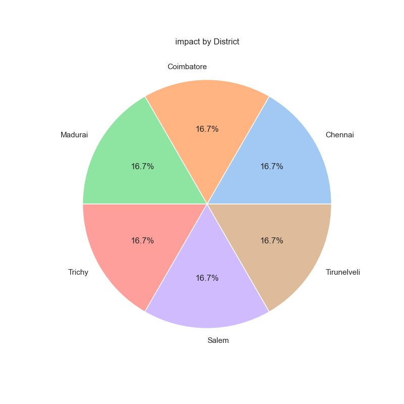
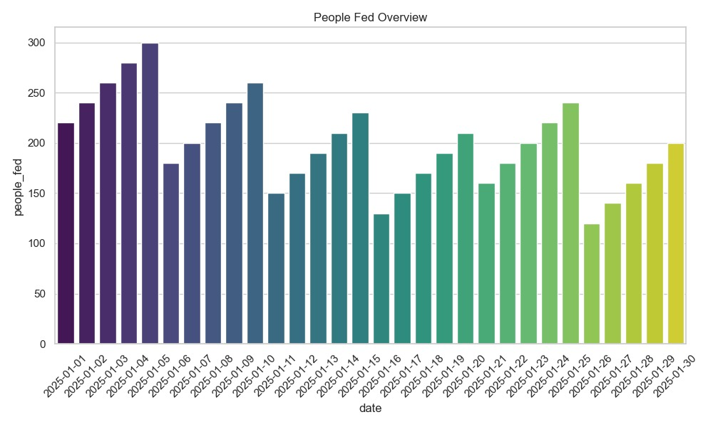
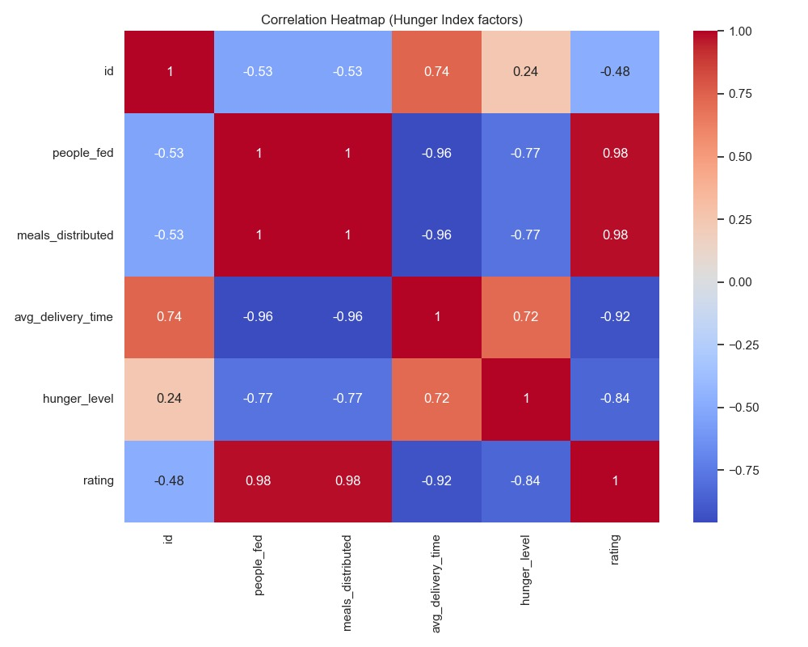

Track your organization's impact and food distribution analytics

Distribution spread across 6 districts

Daily distribution trends over the last 30 days

Hunger Index factors correlation analysis
Emergency Requests
Loading...
Loading...
No feedback available yet